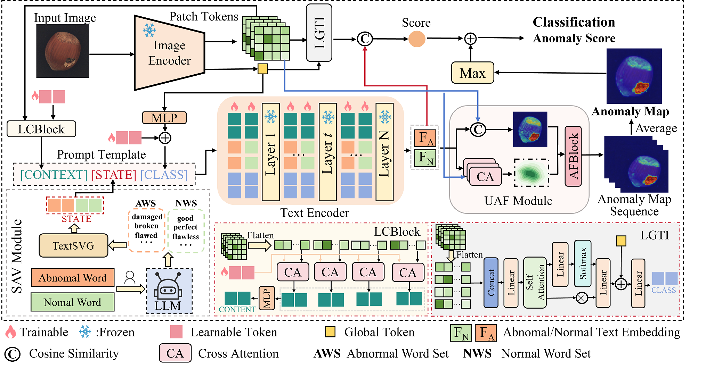
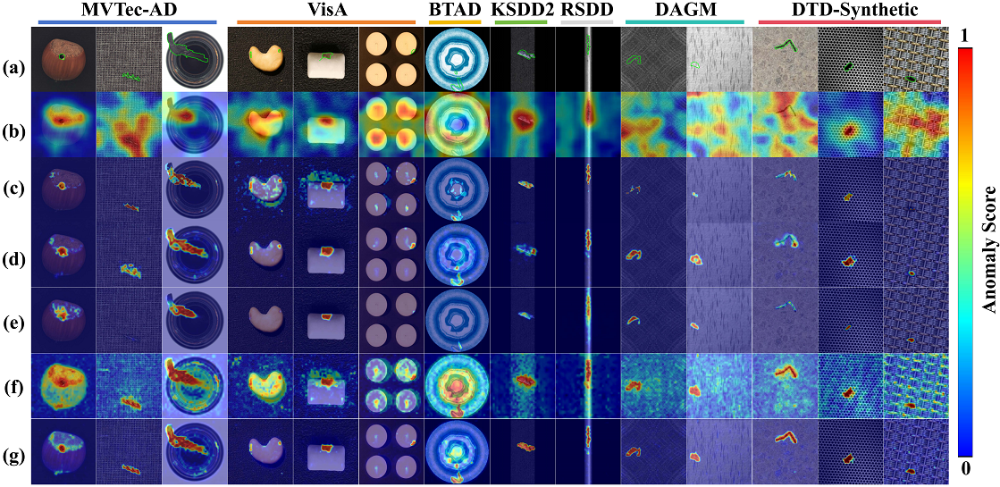
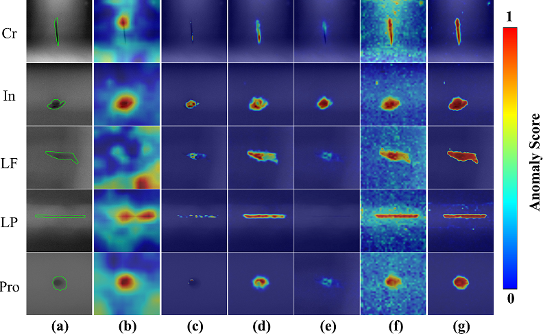

Cross-Modal Guidance Learning for Zero-Shot Industrial Anomaly Detection
Anonymous Submission
Note that in order to comply with the double-blind review requirements of the journal, we have anonymized the link and related content
Abstract
Zero-shot Industrial Anomaly Detection (ZIAD) aims to develop a unified model capable of directly identifying unseen anomaly categories in images without requiring reference samples. Recently, large-scale vision–language models (VLMs) such as CLIP have shown great potential for solving this task. However, existing methods typically rely on manual text prompts to guide VLMs in anomaly detection, which often fail to capture fine-grained semantic cues, leading to limited accuracy. To address the challenge, this paper proposes a novel Cross-Modal Guidance Learning (CMGL) framework for ZIAD. Instead of handcrafted textual prompts, CMGL introduces learnable prompting mechanism to fully exploit the collaborative guidance between visual and textual modalities for efficient unseen anomalies detection. Leveraging the frozen image encoder of pre-trained CLIP, the CMGL extracts multi-scale patch tokens and global tokens of the input image as visual representations. Then, informed by the cross-modal information, adaptive prompt vectors are constructed to obtain textual representations. In the process, a Learnable Context Block (LCBlock) and a Multi-Layer Perceptron (MLP) are introduced to extract holistic semantics and fine-grained details, and an Adaptive State Vector Module (ASVM) is designed to learn generalized normal and abnormal state vectors from extensive text descriptions. By aggregating the outputs of these components, textual representations of the image are acquired through the frozen text encoder. Finally, a Local-Global Token Integrator (LGTI) and an Uncertainty-Aware Anomaly Fusion Module (UAFM) are proposed to achieve anomaly recognition and localization through visual–textual alignment. Extensive experiments on multiple industrial datasets demonstrate the superiority of our method. Code and Datasets Available Here
Overview

Normal and Abnormal Text Descriptions
Results of Anomaly Detection

